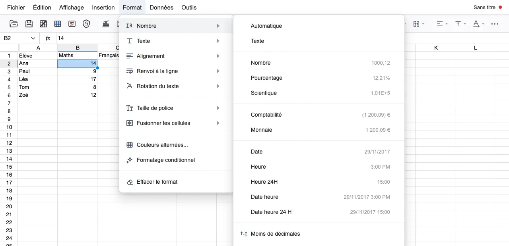

L’interface

De haut en bas : la barre de menus, la barre de boutons, la barre de formule, la feuille, les onglets de feuilles et le zoom.
Les menus
| Menu | Contenu |
|---|---|
| Fichier | ouvrir, enregistrer, imprimer |
| Édition | annuler, refaire, recopier vers le bas, à droite |
| Affichage | quadrillage, figer |
| Insertion | image, graphique, case à cocher, liste déroulante |
| Format | nombre, texte, alignement, fusion, couleurs alternées, formatage conditionnel |
| Données | trier et filtrer |
| Outils | protéger, ce manuel (Manuel d’utilisation), DocTools, code source, version (A propos...) |
Une coche marque une option active : quadrillage affiché, cellules figées, gras, filtre, classeur protégé.

La barre de boutons
| Bouton | Rôle |
|---|---|
| ouvrir, enregistrer | |
| afficher ou masquer le quadrillage | |
| couleurs alternées | |
| formatage conditionnel | |
| protéger ; bleuté quand le classeur est protégé | |
| insérer un graphique | |
| insérer une image | |
| annuler, refaire | |
| effacer la mise en forme | |
| pourcentage, moins ou plus de décimales | |
| Automatique, Arial, 10 | format de nombre, police, taille |
| gras, italique, souligné | |
| couleur du texte, du fond | |
| bordures, fusion | |
| alignements, rotation, renvoi à la ligne | |
| figer | |
| somme automatique et autres formules | |
| trier et filtrer |
La petite flèche d’un bouton ouvre ses choix ; le bouton lui-même refait le dernier. Dans une fenêtre étroite, les derniers boutons sont derrière .
La barre de formule
- À gauche, la zone de nom : l’adresse de la sélection, ou le nom de la plage. Sa flèche liste les plages nommées et ouvre le gestionnaire de noms.
- À droite de fx, le contenu de la cellule, formule comprise : on peut l’y modifier.
La feuille
- Le clic droit ouvre un menu selon l’endroit : cellule, en-tête de colonne ou de ligne, onglet de feuille.
- La feuille de départ a 84 lignes et 60 colonnes (A à BH). On en ajoute par le clic droit, Insérer (lignes et colonnes).
- La poignée bleue au coin de la sélection recopie.
Onglets et zoom
En bas, ajoute une feuille, les liste toutes (les feuilles). À droite, − et + règlent le zoom ; un clic sur le pourcentage propose 10 % à 400 %.
Annuler
ou Ctrl Z annule, , Ctrl Y ou Ctrl Maj Z refait : saisies, collages, mises en forme, insertions. L’historique repart de zéro quand on ouvre un classeur, qu’on l’affiche sans quadrillage, qu’on le protège, ou qu’on y ajoute un nom ou une règle de formatage conditionnel. Les graphiques ne passent pas par lui : on les modifie ou supprime par leurs boutons.